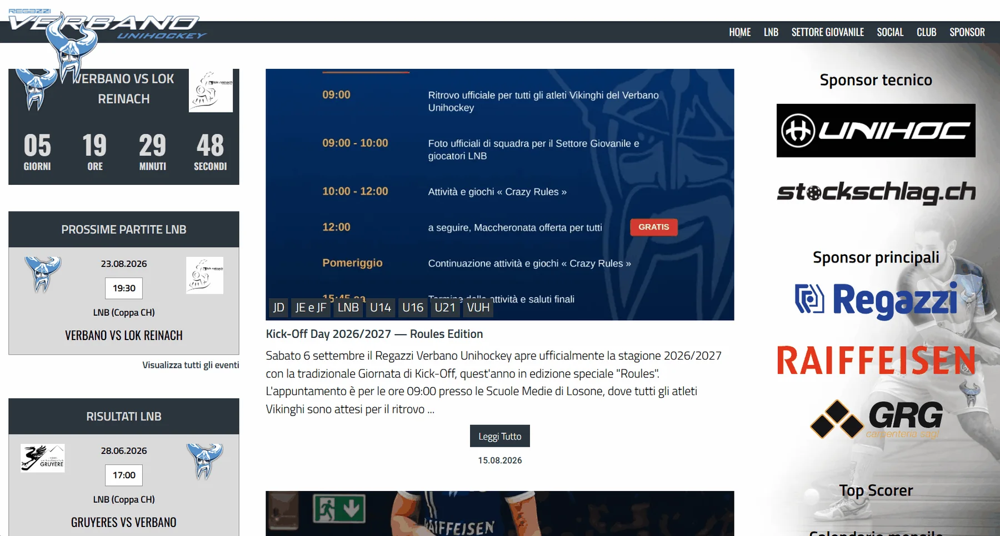

← Torna ai lavoriWebsite redesign · Sport
Regazzi Verbano Unihockey
Un progetto di rinnovo per una realtà sportiva con molti contenuti, squadre, news ed esigenze diverse tra desktop e mobile. Il lavoro si concentra su struttura, leggibilità e una gestione più ordinata dei contenuti.
Walkthrough / materiale di progettoRegazzi Verbano Unihockey
Il problema non era avere più contenuti. Era farli funzionare meglio.
Un sito sportivo cresce rapidamente: calendario, risultati, squadre, giocatori, news, sponsor e sezioni dedicate. Quando ogni informazione compete per lo stesso spazio, l'esperienza diventa pesante soprattutto su smartphone.
Intervento
- Gerarchia visuale più chiara e interfaccia più contemporanea.
- Revisione della navigazione e del comportamento su mobile.
- Componenti riutilizzabili per squadre, news e contenuti ricorrenti.
- Maggiore coerenza tra sezioni, tipografia e pulsanti.
- Attenzione alla possibilità di aggiornare il sito senza ricostruire ogni pagina.
Il progetto rappresenta bene il tipo di lavoro che mi interessa: prendere qualcosa che esiste già, capire dove crea attrito e intervenire senza perdere l'identità dell'organizzazione.
Visita il sito ↗Punto di partenza

Materiale fornito per il progettoPrima del rinnovo
Hai un sito simile?
Possiamo partire da ciò che hai già.
Mandami il link del tuo sito e dimmi cosa vorresti migliorare.